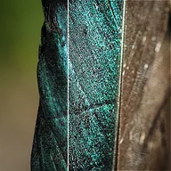

เพิ่มความคมชัด

ใช้ unsharp mask แบบ 3x3 เพื่อเพิ่มรายละเอียดเล็กๆ
เพิ่มความคมชัดช่วยดึงรายละเอียดเล็ก ๆ ออกมา ความแรง คือปริมาณที่ปรับ และ รัศมี คือความกว้างของขอบที่ถูกทำให้คม หากมากเกินไปจะเกิดเงาเป็นวงรอบขอบ หากต้องการวิธีเพิ่มความคมชัดแบบอื่น ลองใช้ อันชาร์ปมาสก์
การตั้งค่า
| การตั้งค่า | ประเภท | ช่วงค่า | ค่าเริ่มต้น |
|---|---|---|---|
| ความแรง | ตัวเลข | 0 ถึง 80 | 1 |
| รัศมี | ตัวเลข | 0.5 ถึง 10 | 1 |
| สไตล์ | ตัวเลือก | คลาสสิก, มาตรฐาน | มาตรฐาน |